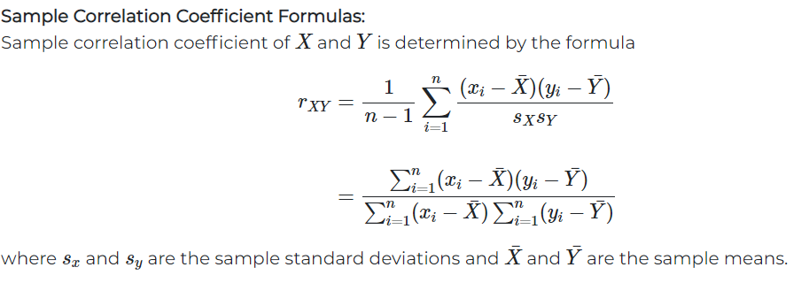
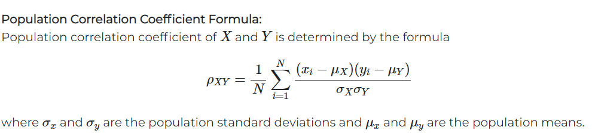
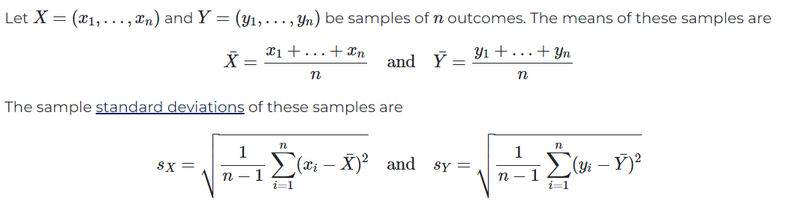
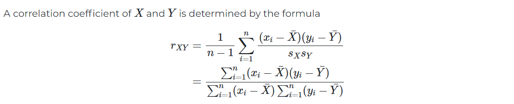

If both the variables vary in the same direction,the correlation is said to be Positive.
For example :
| Hight(cm) | 150 | 152 | 155 | 160 | 162 |
|---|---|---|---|---|---|
| Weight(kg) | 60 | 62 | 64 | 65 | 67 |
If both the variables vary in the opposite direction,the correlation is said to be Negative.
For example:
| Price(rupees per unit) | 10 | 8 | 6 | 5 | 4 |
|---|---|---|---|---|---|
| Demand(units) | 100 | 200 | 300 | 400 | 500 |
When only two variables are studied, the relation is said to be Simple correlation.
For example: The quantity of money and price level, demand and price ,etc.
When more than two variables are studied ,the relation is said to be Multiple correlation.
For example: Relationship of price, Demand and supply of a commodity.
When more than two variable are studied excluding some other variables,the relation is said to be Partial correlation.
Total correlation:-When more than two variables are studied without excluding any variables,the ralation is said to be Multiple correaltion.
If tha ratio of change between two variables is constant,the correlation is said to be Linear.If such variables are plotted on graph paper, a staight line is obtained.
For example:
| Milk(l) | 5 | 10 | 15 | 20 | 25 |
|---|---|---|---|---|---|
| curg(kg) | 2 | 4 | 6 | 8 | 10 |
If the ratio of change between two variables is not constant, the correlation is said to be Nonlinear.If such variables are plotted on graph paper ,a curve is obtained.
For example:
| Advertising exprenses (rupees in lacs) | 3 | 6 | 9 | 12 | 15 |
|---|---|---|---|---|---|
| sales(rupees in lacs) | 10 | 12 | 15 | 15 | 16 |
 
 